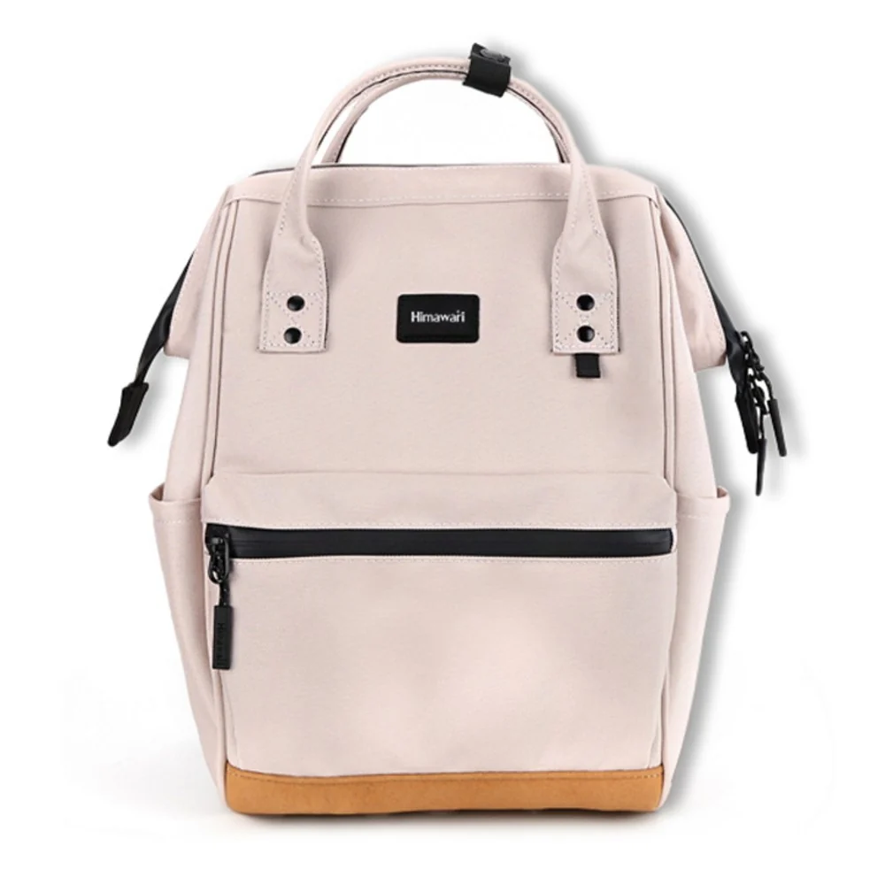

작은 백팩을 고를 때 주머니 수보다 먼저 볼 부피

지갑과 작은 노트만 넣었을 때는 넉넉하던 백팩이 천으로 된 소품 하나를 더하자 부풀어 오릅니다. 들어가는 물건의 무게는 크게 늘지 않았는데 지퍼를 닫는 손은 더 바빠집니다. 작은 가방을 고를 때 소지품 개수와 무게만 생각하면 이런 변화를 놓치기 쉽습니다. 부피가 큰 물건은 가벼워도 그 모양을 둘 자리가 필요합니다. 미니 백팩을 계속 사용할지 고를 때에는 어느 짐이 바깥 모양을 바꾸는지 봅니다.
같은 가방을 쓰는 두 날을 생각해봅니다. 평일에는 휴대전화와 지갑, 얇은 수첩을 넣고, 주말에는 가벼운 천 주머니까지 더합니다. 평일의 남는 칸을 보면 주말 짐도 들어갈 것 같지만, 빈 포켓의 면적과 큰 묶음이 놓일 부피는 다를 수 있습니다. 가방의 작은 칸이 여러 개 남았다는 사실만으로 몸체에 필요한 공간까지 남았다고 판단하기 어렵습니다. 큰 한 묶음이 놓일 자리를 먼저 고릅니다.

작은 몸체에서 부피가 드러나는 면
Himawari No.124S 베이지의 실제 제품 사진에는 세로로 놓인 몸체와 위쪽의 둥근 손잡이, 정면을 가로지르는 검정 지퍼 선이 보입니다. 몸체 아래에는 다른 색의 면이 이어집니다. 카탈로그 외부 크기는 가로 22 × 세로 33 × 폭 14cm이고 제품 자체 중량은 500g으로 안내됩니다. 바깥 크기와 빈 가방의 무게를 읽는 정보이며, 내부 칸의 치수나 짐을 넣은 뒤의 형태는 실제 구성에서 확인합니다.
이 크기의 백팩을 볼 때에는 정면의 작고 단정한 모습에만 시선이 머물 수 있습니다. 부피가 있는 짐을 넣으면 옆면이 어느 정도 나오는지와 윗부분이 어떻게 닫히는지도 살펴봅니다. 작은 노트와 두꺼운 천 주머니를 함께 담았을 때 어느 쪽이 먼저 자리를 차지하는지 보는 것입니다. 몸체의 정면이 마음에 들었던 사람이라도 옆모습까지 같은 인상으로 남기를 바라는지는 따로 생각할 수 있습니다.
부드러운 물건은 접을 수 있으니 어느 가방에나 맞출 수 있을 것처럼 느껴질 때가 있습니다. 실제로는 접는 방향과 별도 보관재에 따라 하나의 묶음이 됩니다. 그 묶음을 평소 사용할 모양으로 준비해야 가방을 고를 기준이 남습니다. 물건을 작게 만드는 데 계속 시간을 쓰게 된다면 작은 백팩을 쓰는 편리함과 준비의 번거로움을 함께 비교할 수 있습니다. 가방 크기는 넣은 순간의 결과와 준비 과정 모두에 영향을 줍니다.
몸체를 채우는 짐과 작은 포켓을 쓰는 짐
지갑이나 열쇠를 넣을 칸이 비어 있어도 큰 주머니를 둘 몸체가 이미 찼을 수 있습니다. 이런 경우 작은 물건을 여기저기 옮기는 것만으로는 여유가 생기지 않습니다. 큰 묶음이 어느 방향으로 놓이는지 보고 한쪽 면을 바꾸어볼 수 있습니다. 가방 구조가 허용하는 범위에서 배치를 바꿨는데도 여밈이 계속 당겨진다면 더 큰 몸체의 후보나 별도 운반을 생각할 시점입니다.
반대로 큰 짐이 있는 날이 드물다면 매일 백팩을 키우는 것이 꼭 편한 선택은 아닐 수 있습니다. 가벼운 날에는 작은 크기를 쓰고 부피가 늘어나는 날만 다른 가방을 고르는 방법이 있습니다. 이때 옮겨 담는 일까지 감안합니다. 휴대전화와 지갑을 같은 작은 묶음으로 관리하면 가방이 바뀔 때 가져갈 것이 분명해질 수 있지만 파우치도 부피를 더합니다. 자신이 반복할 수 있는 만큼의 분할을 택합니다.
두 가방을 번갈아 쓰기 번거로운 사람이라면 큰 후보에 평소 짐을 넣은 모습도 봅니다. 비어 있는 면이 어느 쪽에 남고 작은 물건이 아래로 내려가는지 확인하면 됩니다. 작은 가방의 꽉 찬 형태와 큰 가방의 여유 있는 형태 사이에서 자신이 받아들일 수 있는 쪽을 고릅니다. 크기를 정하는 판단은 물건이 최대한 많이 들어가는 쪽으로만 이어지지 않습니다. 평소 자주 쓰는 구성이 비교의 중심입니다.
닫힌 뒤에도 꺼낼 수 있는 여유
부피가 큰 묶음 옆으로 작은 물건을 끼워 넣었다면 그 작은 물건을 먼저 꺼낼 수 있는지 봅니다. 들어갈 때에는 손으로 빈틈을 만들었지만 사용할 때에는 큰 짐을 먼저 빼야 할 수 있습니다. 작은 백팩을 고를 때 필요한 여유는 지퍼가 움직이는 자리와 손이 들어갈 자리까지 포함됩니다. 여행용 가방처럼 오래 닫아둘 때와 짧은 외출에서 자주 여는 때의 기준이 달라지는 부분입니다.
가방을 놓고 열었을 때 큰 천 주머니가 입구 위로 펼쳐진다면 그 상태에서 다른 물건이 보이는지도 살펴봅니다. 깊이 넣는 방법으로 바꾸면 위쪽은 비지만 아래 물건에 접근하는 길이 달라질 수 있습니다. 물건마다 필요한 접근이 다르므로 오늘의 사용 횟수를 기준으로 우선순위를 둘 수 있습니다. 오늘 가장 자주 꺼낼 것에 길을 남기고, 도착해서만 사용할 묶음은 그다음 순서로 두는 식으로 공간의 역할을 고를 수 있습니다.
제품 사진 옆에 놓인 실타래는 가볍고 부피 있는 소품을 떠올리는 연출입니다. 사진에서 밖에 보이는 두 타래가 이 가방 안에 그대로 들어간다는 실측 자료로 읽지는 않습니다. 실제로 가져갈 물건이 있다면 보관할 묶음을 만든 뒤 그 크기와 가방 입구를 대조합니다. 도구를 쓰는 방법은 그대로 두고, 가방을 고르는 질문을 물건의 부피와 접근 여유에 맞추는 것입니다.
No.124S의 작은 크기가 마음에 든다면 그 장점을 어느 날에 쓰고 싶은지 정해봅니다. 얇은 소지품으로 짧게 나가는 날과 부피가 큰 묶음을 더하는 날을 각각 보면 작은 가방의 역할이 분명해집니다. 매번 마지막 지퍼를 닫으며 짐을 다시 접고 있다면 그때 부풀었던 면을 기억할 수 있습니다. 다음 후보에서는 포켓 수보다 그 한 묶음이 놓일 몸체와 여밈의 여유부터 보게 됩니다.